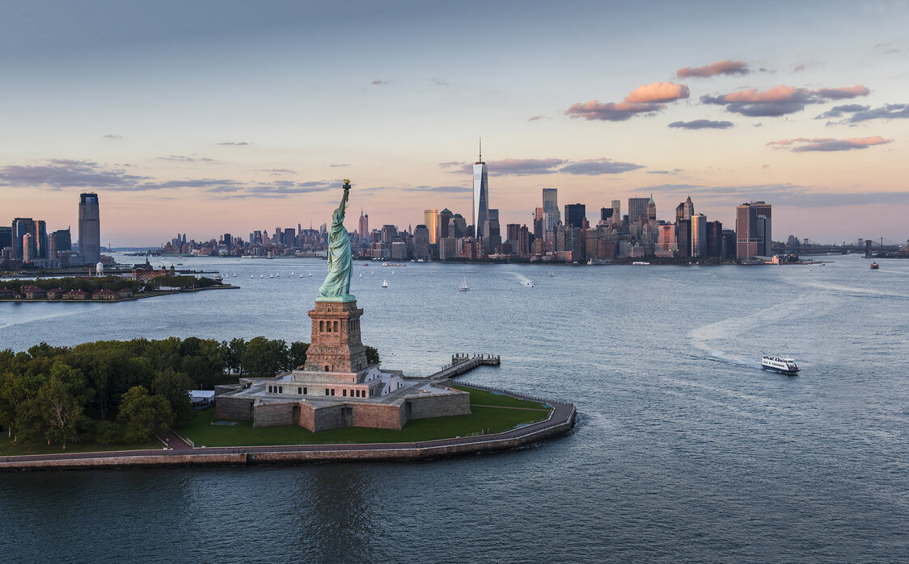
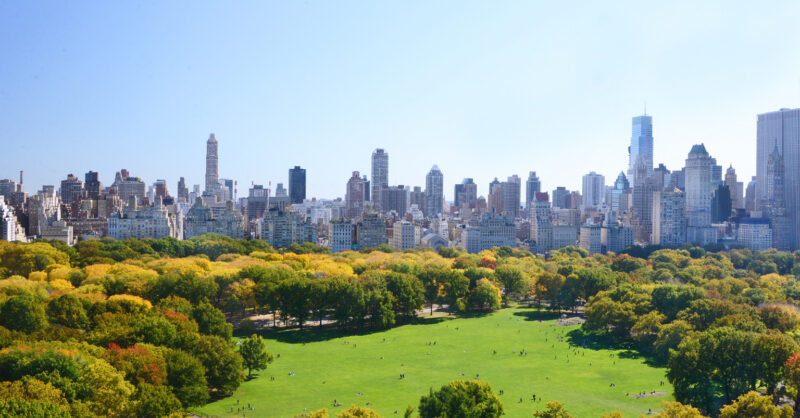

Must See Attractions

Statue of Liberty
Visit this world-famous symbol of freedom and take in breathtaking views of the Manhattan skyline.

Central Park
Stroll through this iconic urban park featuring picturesque landscapes, walking paths, and cultural landmarks.

Times Square
Immerse yourself in the dazzling lights and vibrant atmosphere of the crossroads of the world.